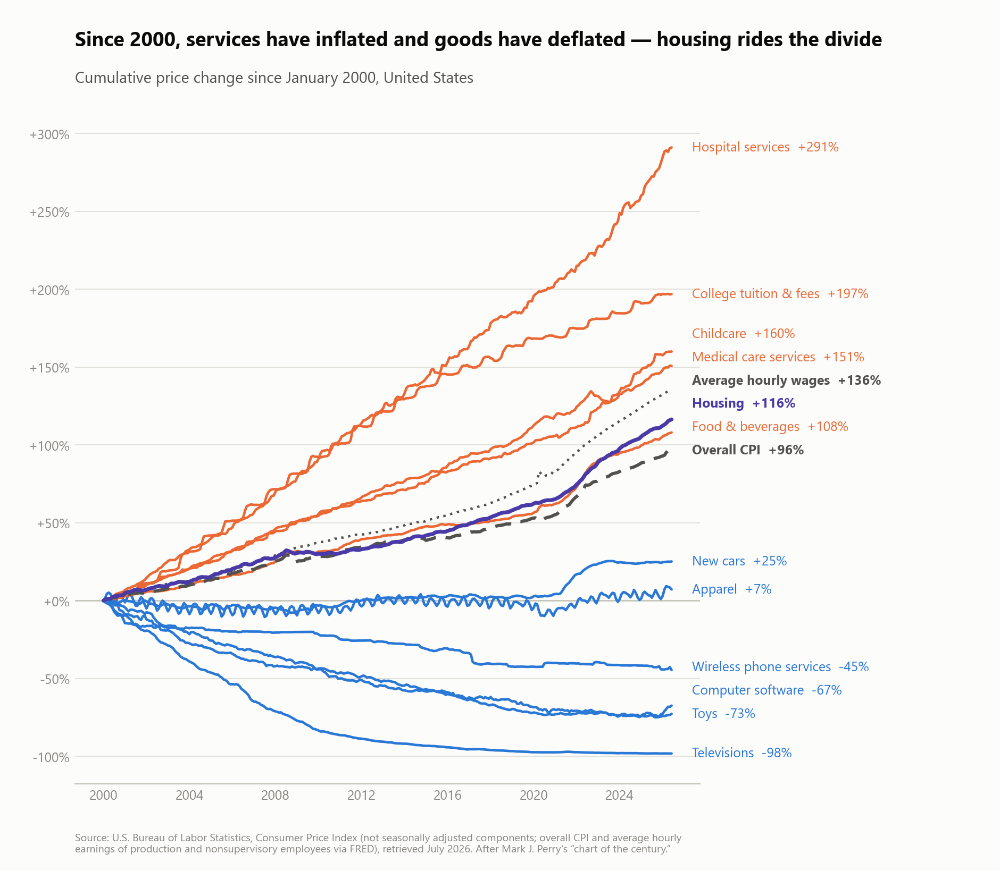
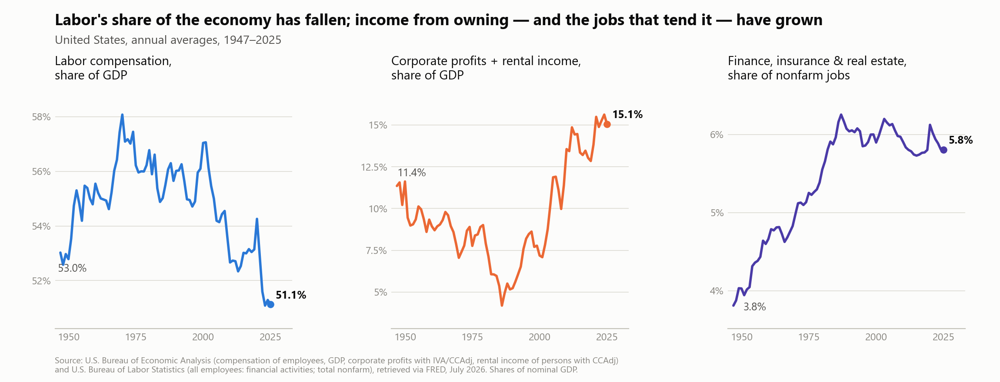

The Price of Absence
July 15, 2026 · second draft
In the house I grew up in, taking care of your things was a moral matter. Fights happened — real ones, voices raised — over whether the lights had been left on in an empty room. A toy that turned up broken, or didn't turn up at all, earned a punishment that arrived on top of the loss of the toy, the way perjury is charged on top of the crime. The object was gone and you had sinned. Cleaning your plate was in the same commandment family: food left over was food wasted, and waste was a species of wrong.
None of this was cruelty. It was a price list, correctly memorized by people who had learned it when it was true. Objects were dear, so care for objects was virtue. Electricity was dear, so the light switch was a moral instrument. Calories had been scarce within living memory, so the last bite was owed. The whole childhood ethic assumed a particular set of relative prices — and then, over about a generation, every one of those prices flipped.
Everything you can drop on your foot got cheaper; everything else got dearer

The Bureau of Labor Statistics has been keeping score of the flip. Since January 2000, overall consumer prices are up 96 percent. Everything manufacturable sits below that line, most of it absurdly below: televisions are down 98 percent, toys down 73, software down 67, apparel roughly flat for a quarter century. The toy whose destruction was a moral event in my childhood is now, adjusted for quality, nearly free. Above the line sits everything made of present human attention: hospital services up 291 percent, college tuition up 197, childcare up 160. The economics is Baumol's: when factory productivity soars and a string quartet still takes four musicians, the quartet's relative price has to rise. (Wages, for what it's worth, rose 136 percent — faster than inflation. This is a story about relative prices, not immiseration; the immiseration is targeted, and we'll get to whom.)
Look at where housing sits: up 116 percent against inflation's 96 — of all the major lines, the one hugging the divide, drifting just above it. That is not an accident of averaging; it is what a house is. A house is half manufactured object, half positional claim. The manufactured half behaves like the blue lines — construction productivity, materials, the couch-like parts — and the positional half behaves like the orange ones, because land is the one input that cannot be made in a factory, and land is most of the story: rising land prices account for about 80 percent of the global house-price boom since World War II. Real estate rides the boundary because it is the boundary — the place where the world of cheap stuff meets the world of expensive position, priced by the square foot.
Hold the childhood ethic up against this chart and the fights over light switches become archaeology. The virtues I was raised in were the virtues of the lower-left corner. We all live in the upper right now. And consumption there has gotten strange.
We buy emptiness by the square foot
Start with what surrounds the cheap objects. IKEA will sell you a three-seat sofa for $499; it covers about 19 square feet of floor. At the median American listing price of $226 per square foot, the patch of house beneath it is worth roughly $4,400 — nine times the sofa — and granting it the walkway clearances the design guides demand brings its claim to $10,000 and up. In Manhattan the sofa's footprint rents for about $400 a month, forever. The sofa depreciates to a curb; the emptiness it displaced appreciates. We have arrived at furniture as a rounding error on the void it occupies.
The average new house doubled since 1950 — about 983 square feet then, roughly 2,150 now — while households shrank, so living space per person nearly doubled in a generation. Objects filled it anyway, and the overflow became its own industry, and here the purchases turn openly weird. America maintains some 2 billion square feet of self-storage — more facilities than McDonald's, Starbucks, and Subway combined — and roughly one household in ten pays an average of $121 a month for a cube whose function is to keep possessions away from their owner's sight. The unit rents for about what apartment space costs per square foot; the difference is that nobody lives there, and mostly nobody visits. Consumer Reports once calculated that the rent, invested instead, would compound to $11,000 in five years — more than the contents of most units would fetch. We are paying compound interest to not see our own belongings. A step further up-market, the professional organizer arrives in person to throw your comforts away — a service in which the deliverable is subtraction, billed by the hour, and the client pays to end up with less.
Whether a household can afford these subtractions is increasingly legible as class. Order requires slack space, a service layer, and above all the confidence of replacement: discarding a coat or a crib is cheap if you can rebuy it on demand, and an inventory policy if you cannot. The epidemiology runs the way you'd now guess — hoarding severity tracks inversely with household income — and in UCLA's room-by-room study of Los Angeles households, three-quarters of garages could no longer hold a car, and mothers' stress hormones tracked how cluttered they said their homes were. Marie Kondo's question — does it spark joy? — is free to ask and expensive to act on. It is a question about objects you can afford to lose.
We pay not to finish our plates
The body kept the same books as the pantry. When calories were scarce, fat was wealth and painters knew it; Rubens gave the Graces themselves the bodies of women who had never been hungry. The reversal is recent and well documented: Sobal and Stunkard's classic review found obesity tracking high status in poor countries and low status in rich ones, and Avner Offer stated the mechanism exactly — “under affluence, it is slimness that is difficult, and demonstrates a capacity for self-control.” In today's American data the gradient is steep where it is steep: among women, obesity runs 45 percent below 130 percent of the poverty line against 30 percent above 350 percent; by education, 40 percent with high school or less against 28 for college graduates. (Honesty note: the income gradient is strong for women, flat for men overall, and reversed for non-Hispanic Black men; the education gradient is the robust one.)
The price structure underneath is the chart again, applied to food. Calories are the cheapest manufactured good there is — refined grains and fats run about a fifth the cost of vegetables per calorie, and in one supermarket audit the least energy-dense foods cost ten times more per 1,000 calories than the densest. Eating the healthiest pattern instead of the cheapest costs about $1.50 a day — trivial at the top of the income distribution, a real line item at the bottom. And when economists tested the comforting supply-side story, food deserts, with supermarket openings and household moves, access barely moved diets: the gap is prices, time, and knowledge. Not-eating is what costs money now, and the poor are priced out of it.
Then the market produced its purest product yet, and gave the game away. A GLP-1 agonist is a subscription whose deliverable is the absence of appetite. At the manufacturers' cash prices — $349 to $449 a month; list is triple that — the not-wanting runs $12 to $15 a day: more than the hamburger whose last bite it declines. My grandparents' clean-plate commandment has been inverted so precisely that we now pay a premium over the food itself in order to leave it uneaten. And the inversion is income-gated like everything else here: Medicare has excluded weight-loss drugs by statute since 2006, only 13 state Medicaid programs covered GLP-1s for obesity as of last year, 56 percent of users tell KFF the drugs strain them to afford, and insured patients with above-median incomes have 60 percent higher odds of being on semaglutide at all. Fullness once signaled wealth; then thinness did; now thinness is literally sold by the month, and the waiting room sorts by income.
We buy the symbol and delete the referent
“A chicken in every pot and a car in every garage” won a presidential election in 1928 because the goods were the point: matter, delivered, to people who lacked matter. Run the slogan today and it dissolves on contact. A chicken in every pot — is it free range? A car in every garage — is it electric, and do the politics of its CEO match yours? (Also: the garage is full; see above.) Nobody can promise Americans goods anymore, because the goods are already here, piled to the rafters and renting overflow cubes. What the chicken and the car now carry is almost entirely symbolic freight — virtue, tribe, identity — and the physical object underneath is the cheap part, the delivery vehicle for a meaning that costs extra.
Consumption was always a little weird at bottom. The petroleum economy burned ancient sunlight — forests and plankton pressed into the soil over a hundred million years — billions of pounds of it, to move tons of steel, to deliver experiences whose final physical form is a microgram of neurotransmitter drifting a few micrometers across a synapse. That ratio of matter mobilized to feeling produced was already absurd. But at least the old absurdity moved matter. The new purchases skip the matter stage: the in-game skin, the streak, the badge — goods with no rivalrous atom in them, bought with real wages. The organizer who subtracts. The storage cube that hides. The drug that un-wants. Each one a purchase whose object is nothing, or less than nothing — the removal of something you already had.
The strangest purchase of the moment may be happening in the universities. Tuition is up 197 percent since 2000 — the second-steepest line on the chart — and a substantial share of the students paying it now route the actual work through a language model. Viewed coldly, they are buying the symbol while deleting its referent: paying five figures a year for a credential that certifies learning, and outsourcing the learning that was the referent of the credential. The transaction still clears because the symbol still trades. But symbols are claims on a referent, and claims eventually get audited — by a job, by a patient, by a deadline that doesn't accept citations. Durkheim had a word for what happens when the scaffolding of meaning people climbed turns out to bear no load: anomie. A cohort is currently purchasing it on credit, at services-inflation prices, and the discovery that the box is empty is scheduled for delivery a few years after graduation.
The ledger underneath: more income from holding, more jobs guarding it

The national accounts record the same migration at economy scale. Labor compensation peaked at 58.1 percent of GDP in 1970 and stands at 51.1 percent; corporate profits plus rental income bottomed at 4.2 percent of GDP in 1986 and have since more than tripled, to 15.1 percent, with the after-tax profit share posting its second-highest reading since 1947 this year. Housing services alone — rents, plus the rent homeowners implicitly pay themselves — run about 12 percent of GDP, and the appreciating ingredient, recall, is the land nobody made. Not every profit dollar is rent in the economist's sense — the decomposition is genuinely contested — but the direction isn't: a growing slice of national income accrues to holding rather than making.
Income from holding must be administered, guarded, and adjudicated, and that employs people — not making anything, but tending claims. Finance, insurance, and real estate grew from 3.8 percent of jobs in 1947 to 5.8 percent, and from a few percent of GDP to more than a fifth. America fields about 1.28 million security guards — more than its high-school teachers — plus half a million property managers, 400,000 compliance officers, and a lawyer for every 250 residents where 1960 needed one per 700. Bowles and Jayadev's accounting of “guard labor” puts roughly a fifth of the employed workforce in work that defends claims rather than producing anything. The self-storage facility is the perfect miniature: a manager, guarding objects nobody visits, on land appreciating faster than anything inside.
Nothing has never cost so much
So assemble the catalog of what a prosperous household now buys: emptiness by the square foot; the removal of its own possessions from view; the professional subtraction of its comforts; the chemical absence of its appetites; credentials with the learning removed; identities riding on top of chickens and cars that were never the point. The unifying thread is that manufacturing made objects nearly free, and so the price system moved on to what cannot be manufactured — space, attention, position, and absence itself — while a growing share of the nation's income and a fifth of its workforce shifted from making things to holding and guarding them.
My parents' price list wasn't wrong; it expired. The lights, the toys, the clean plate — all of it was calibrated to a world where matter was the scarce thing and the space around matter was free. That world inverted within one lifetime, and the moral readings inverted with it, which is why the crowded apartment and the heavy body — once the plain look of prudence and plenty — now read as failures of discipline, while the empty counter and the flat stomach, which are mostly purchased, read as virtue. Counted in objects, poverty in America looks nearly solved; everyone has the television, and the television is nearly free. Counted in absences — empty square feet, declined calories, hours of undivided attention — the gradient is as steep as it ever was, and steepening. Globalization made everything cheap except nothing. Nothing has never cost so much.
Sources
- Price-divergence chart: author's calculations from U.S. Bureau of Labor Statistics Consumer Price Index component series (not seasonally adjusted) through June 2026, with overall CPI and average hourly earnings of production and nonsupervisory employees via FRED; after Mark J. Perry, “Chart of the Day… or Century?” AEI Carpe Diem (2022). Baumol, “Macroeconomics of Unbalanced Growth,” American Economic Review 57(3), 1967; Helland & Tabarrok, Why Are the Prices So Damn High? (Mercatus, 2019).
- Knoll, Schularick & Steger, “No Price Like Home: Global House Prices, 1870–2012,” American Economic Review 107(2), 2017. Realtor.com median listing price per square foot via FRED; IKEA product listings; Douglas Elliman/Miller Samuel Manhattan rental report (Nov 2025); U.S. Census Bureau, Characteristics of New Housing; AEI/Perry on new-home size and space per person, 1973–2015.
- StorTrack and SpareFoot self-storage industry statistics; YouGov storage survey (Nov 2025); Consumer Reports, “The High Cost of Storing Your Stuff” (2016); Arnold et al., Life at Home in the Twenty-First Century (UCLA/Cotsen, 2012); Saxbe & Repetti, Personality and Social Psychology Bulletin (2010); Nordsletten et al., British Journal of Psychiatry (2013).
- Image: Peter Paul Rubens, The Three Graces (c. 1630–35), Museo del Prado; public-domain photograph via Wikimedia Commons. Sobal & Stunkard, Psychological Bulletin 105(2), 1989; Offer, The Challenge of Affluence (Oxford, 2006); CDC/NCHS obesity-by-SES data (MMWR 66(50), 2017); Drewnowski, AJCN 2010; Monsivais & Drewnowski, JADA 2007; Rao et al., BMJ Open 2013; Allcott, Diamond & Dubé, QJE 134(4), 2019; KFF Health Tracking Poll on GLP-1 use (Nov 2025); KFF, “Medicaid Coverage of and Spending on GLP-1s” (2024); NovoCare and LillyDirect cash pricing (2026).
- “A chicken in every pot”: Republican National Committee campaign advertisement, 1928 (commonly attributed to the Hoover campaign).
- Shares-of-GDP chart: author's calculations from BEA national accounts (compensation of employees, corporate profits, rental income of persons) and BLS payrolls via FRED. Giandrea & Sprague, BLS Monthly Labor Review (2017); Karabarbounis & Neiman, QJE 129(1), 2014; Stansbury & Summers, Brookings Papers on Economic Activity (2020); NAHB Eye on Housing (2026); Philippon, AER 105(4), 2015; Jayadev & Bowles, Journal of Development Economics 79(2), 2006, and “Garrison America,” Economists' Voice (2007); BLS Occupational Outlook Handbook; ABA Profile of the Legal Profession (2024).